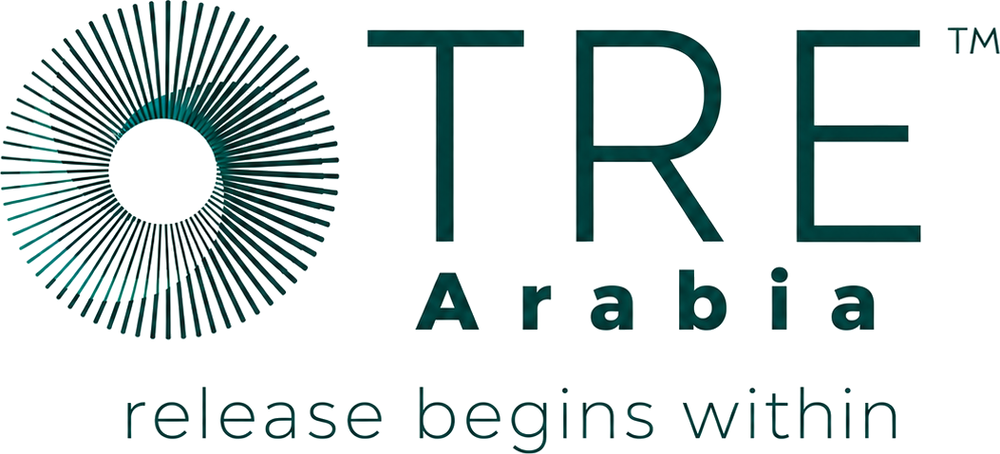

TRE® is a simple, body-based practice that helps the nervous system let go of stress, tension, and old trauma — no talking required, just seven exercises and the body's own natural shake.
Created by Dr. David Berceli, PhD, TRE® safely activates the body's own tremor mechanism — the same one animals use to discharge stress after a threat passes — to release deep muscular tension and calm the nervous system.
TRE doesn't require talking through what happened. It's a body-based (somatic) process: once the exercises trigger the natural shaking response, the body does the rest, discharging stored tension without needing to revisit the story behind it.
It's designed as a self-help tool — learned once, used for life. Many people also use it alongside therapy, physiotherapy, or other care, as a complement rather than a replacement.
People report:
The first Arabic-speaking practitioner in the world to be certified by TRE Global. TRE Arabia was founded in 2018 after Mohammed met Dr. David Berceli at a TRE Advanced Workshop in Bali, Indonesia.
TRE Arabia's mission is to bring this modality to the region in a way that speaks the language — literally and culturally — of the people who need it: qualifying providers and trainers across the Arab world, with the direct support of Dr. David Berceli and the global TRE community.
Every session is delivered personally by Mohammed, drawing on training directly connected back to TRE's founder — not a franchise once removed.
No pressure, no commitment upfront — just a conversation first.
A short conversation to understand what you're carrying and whether TRE is the right fit for you, right now.
A guided introduction to the seven exercises, in a safe, one-on-one setting led by Mohammed.
Continue with packages, group sessions, or move toward certification if you want to bring TRE to others.
التشافي هو حقيقة عاشتها رغد 🌿 كناجية من السرطان...
مهندسة وحاصلة على الدكتوراه، كنتُ لسنوات أبدو كامرأة قوية...
Message us on WhatsApp to book your free discovery call — Mohammed replies personally.
Message us directly for a free discovery call, a first session, or any questions — Mohammed responds personally.
Chat on WhatsApp